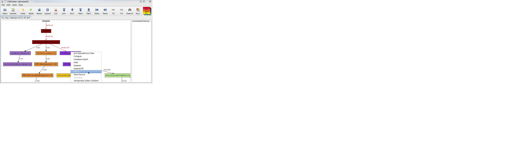
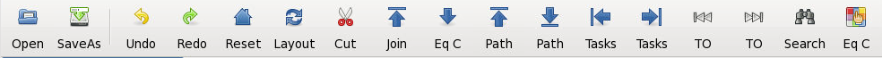
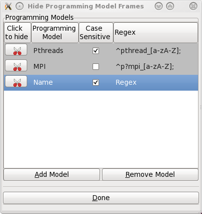

Using the stat-view GUI¶
Description¶
stat-view (Fig. 5) is a GUI for viewing STAT-outputted dot files. stat-view provides easy navigation of the call prefix tree and also allows manipulation of the call tree to help focus on areas of interest. Each node in the STAT call prefix tree represents a function call and the directed edges denote the calling sequence. Further, the edges are labeled by the set of tasks that have taken that call path. For simplification, stat-view will display the number of tasks in the set and truncate long task lists in the main display with "..." notation. Similarly, long function node label names will be truncated with "..." notation. The truncation length can be modified via the File->Preferences menu (this requires clicking the Layout button to rerender any already loaded graphs). Nodes are colored based on the set of tasks of the incoming edge, providing a visual distinction when different tasks take different branches.
The stat-view GUI also allows you to view the application source files in the stack traces, when sampling is done at the source file and line number granularity. This may require the source file's path to be added to the search path, through File -> Add Search Paths. If an application's source code is edited after STAT is run, the line numbers shown in the stack traces may not be accurate. To alleviate this problem, STAT can optionally cache the source files for the currently displayed .dot file. To cache files click on the File -> Add Search Paths menu item. This will find and save the source files in the .dot file's stat_results directory. The next time you open the .dot file with stat-view, the source files will automatically be loaded from the cache.


Fig. 5 A screenshot of the stat-view GUI.¶


The stat-view Toolbar¶
The main window also has several tree manipulation options (Fig. 8). Note the initial click of a traversal operation operates on the original call prefix tree, while the remaining operations are performed on the current visible state of the call prefix tree.


Fig. 8 The stat-view tree manipulation toolbar.¶
The toolbar operations are defined as follows:
- Open
Open a STAT generated .dot file
- Save As
Save the current graph in .dot format, which can be displayed by stat-view or in an image format, such as PNG or PDF, which can be viewed on any computer with an image viewer
- Undo
Undo the previous operation
- Redo
Redo the undone operation
- Reset
Revert to the original graph
- Layout
Reset the layout of the current graph and open in a new tab. This is useful for compacting wide trees after performing some pruning operations.
- Cut
This feature (Fig. 9) allows you to collapse the prefix tree below the implementation frames for various programming models. For instance, a user may wish to hide all calls that happen within the MPI library. The programming models may be entered in a configuration file or added by the user. STATview looks for configuration files in $prefix/etc/STAT/STATview_models.conf and in $HOME/.STATview_models.conf. Programming models are specified as regular expressions, using Python's
remodule syntax, and there.searchfunction is used in favor ofre.match.
Fig. 9 The stat-view programming model cutting interface.¶
- [Cut] MPI
Collapse the MPI implementation frames below the MPI function call.
- [Cut] Pthreads
Collapse the Pthread implementation frames below the Pthread function call.
- Join
Join consecutive nodes of the same equivalence class into a single node and render in a new tab. This is useful for condensing long call sequences.
- [Traverse] Eq C
Traverse the prefix tree by expanding the leaves to the next equivalence class set. The first click will display the top-level equivalence class.
- [Traverse Longest] Path
Traversal focus on the next longest call path(s). The first click will focus on the longest path.
- [Traverse Shortest] Path
Traversal focus on the next shortest call path(s). The first click will focus on the shortest path.
- [Traverse Least] Tasks
Traversal focus on the path(s) with the next least visiting tasks. The first click will focus on the path with the least visiting tasks.
- [Traverse Most] Tasks
Traversal focus on the path(s) with the next most visiting tasks. The first click will focus on the path with the most visiting tasks.
- [Traverse Least] TO
Temporal Order traversal focus on the path(s) that have made the least execution progress in the application. The first click will focus on the path that has made the least progress.
- [Traverse Most] TO
Temporal Order traversal focus on the path(s) that have made the most execution progress in the application. The first click will focus on the path that has made the most progress.
- Search
Search for call paths containing specified text, taken by specified tasks, or from specified hosts. Search text may be a regular expression, using the syntax described in http://docs.python.org/library/re.html.
- [Identify] Eq C
Identify the equivalence classes of the visible graph. After clicking on this button, a window will pop up showing the complete list of equivalence classes.